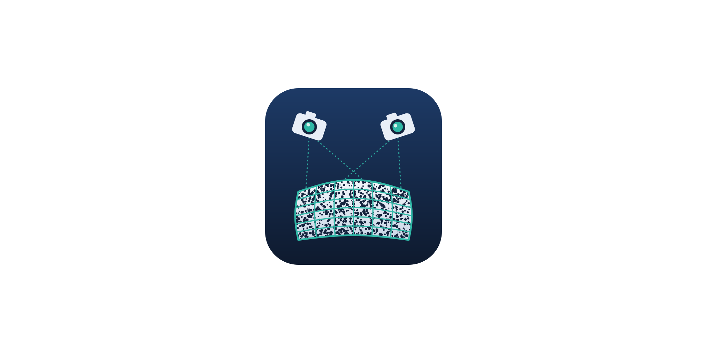
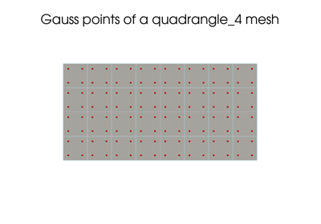
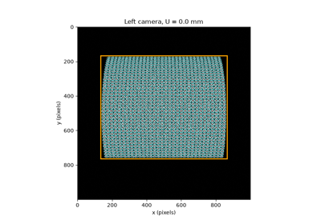
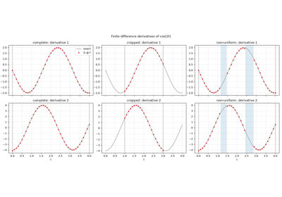
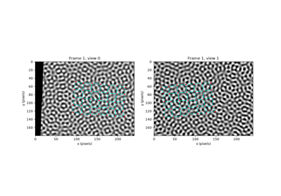

Usage#
The package pysdic provides a collection of examples demonstrating how to use the package, from the geometry and
the cameras to a complete SDIC measurement. The examples are grouped in galleries, one per part of the package. Each
example can be downloaded as a Python script or a Jupyter notebook.
Note
Some examples need optional packages (open3d for the ray casting, pyvista for the 3D displays, …): they
are given at the top of each example (see Installation).
Galleries#
Geometry
Point clouds, meshes and integration points: the creation of 2D and 3D surface meshes, the geometry of the surfaces, the adjacency of the elements and the ray casting.
Computer vision
The camera models: the projection of points, the distortion of images, the optical flow, the calibration of the parameters and the triangulation.
Imaging
Cameras, images and views: the projection of points and meshes on a camera, the projection of the gray levels of an image, the drawings of the image plotter and the synthetic images of a cylinder.

SDIC
The SDIC analysis: the measurement of a displacement, the optimization of the cameras and the finite difference operators of the temporal regularization.
Workflows
The procedures of pysdic.workflows: the integration points, the initialization by optical flow, the
shape at the reference frame, the tools on the displacements and the quality control.
Blender rendering
The rendering of synthetic images with lighting and materials, with the separate package
pysdic-blender (see its reference page for an example).
The galleries follow the order of a first SDIC analysis: Geometry (the surface), Computer vision (the camera models), Imaging (the cameras and the images), SDIC (the measurement), then Workflows (the recurring procedures of an analysis).
All the examples#
Geometry#

Integration points: interpolation, derivatives and projection

Computer vision#


Imaging#

Synthetic stereo images of an inflated cylinder
Stereo digital image correlation#

Finite difference operators on cropped and non-uniform samplings
Workflows#

Initializing a displacement by optical flow